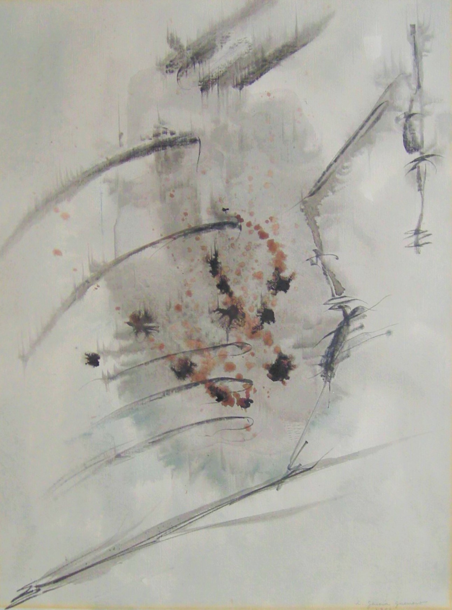

Luis Garcia Guerrero
1921 – 1996
Artist Biography
Luis Garcia Guerrero was a largely self-taught artist from Guanajuato in Mexico whose style varied over the years, moving from semi-realism towards abstraction and later specialising in brightly coloured still life paintings. This has made it hard to place him within the various Mexican art movements, though his handling of colour has stood out throughout. Garcia Guerrero’s early portraits and landscapes gradually changed in the 1950s into what the art critic Marta Traba called "rare and extemporaneous abstractions within the whole of his work", before his style settled into a form of simplified representation notably of bowls of fruit. In the 1950s he produced etchings and designs for stained glass windows and in later years exhibited at the Mexican Art Gallery in Mexico City. The Museum of Modern Art in Mexico City held a major retrospective in 2006.

Untitled, 1961